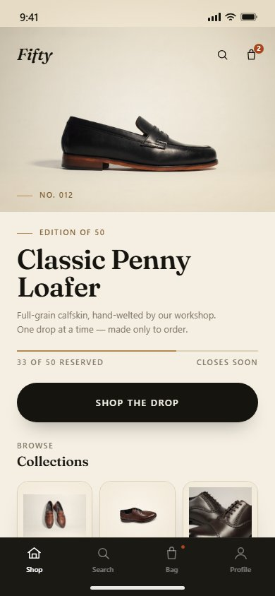
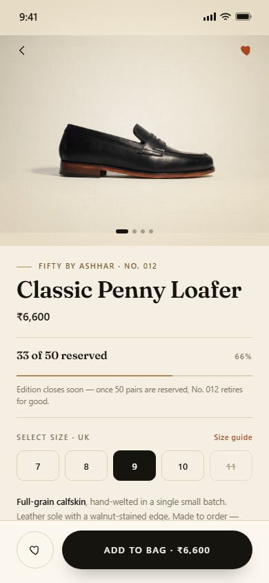
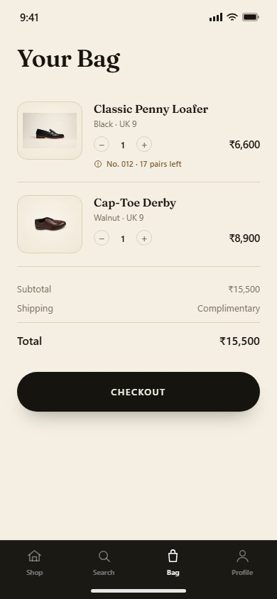
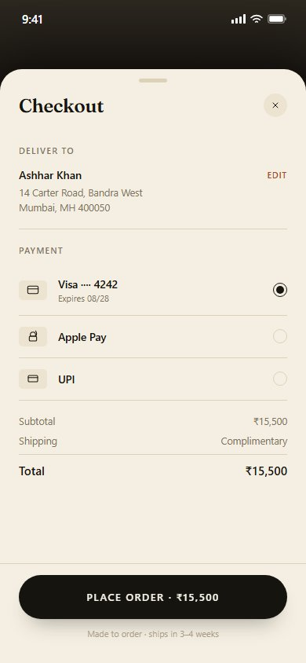
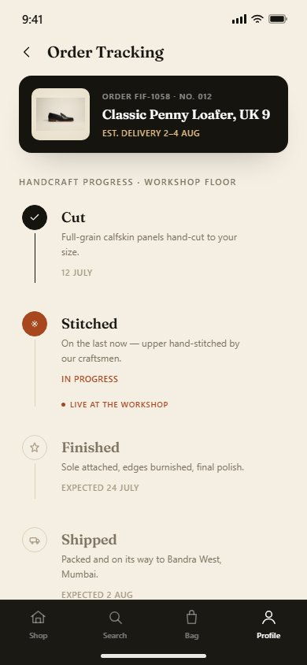
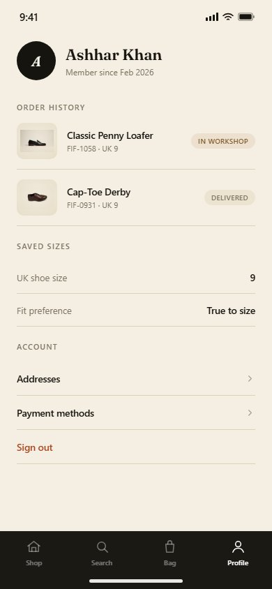

This extends the existing Fifty By Ashhar brand — storefront, admin dashboard, and workshop app already documented in the existing Fifty By Ashhar case study — into a native iOS shopping experience. The brief was to give the brand's small-batch, made-to-order footwear a mobile home that feels as considered as the product itself: full-bleed imagery, quiet chrome, and the same serif wordmark and warm neutral palette customers already know from the storefront.
A full-bleed hero introduces the current drop with the brand's editorial tone — large Fraunces display type, a tracked-out "Edition of 50" label, and a quiet hairline progress indicator instead of a loud badge. Collections and the current edit sit below on a plain cream field, letting the product carry the page.

The consumer-facing version of the admin's "33 of 50 reserved" drop tracker: a slim hairline-framed progress module with a plain-language note ("Edition closes soon"). Sizes use a minimal underline-style grid rather than default chips, and the single primary action — Add to Bag — is pinned to a safe-area-aware bottom bar.

A straightforward review of reserved pairs before checkout. Each line item carries its own edition context ("No. 012 · 17 pairs left") so scarcity stays visible without resorting to discount banners or promo codes — this brand doesn't discount.

Presented as an iOS sheet rising over a dimmed Bag screen, with a grabber handle and a blurred, translucent footer holding the single "Place Order" action — standard HIG modal treatment for a focused, interruption-free payment step.

Ties directly back to the brand's real workshop app: the same handcraft stages the workshop floor already tracks internally — Cut, Stitched, Finished, Shipped — surfaced here as a customer-facing timeline, with a "live at the workshop" indicator on the active stage to reinforce that each pair is made to order, not pulled from a warehouse shelf.

Order history (with the same in-workshop / delivered status language as tracking) plus saved size and fit preference, so a returning customer can reserve their next pair in a tap without re-entering sizing.
